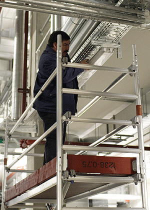

Der Arbeitgeber hat dafür zu sorgen, dass kraftbetriebene Arbeitsmittel mit gefahrbringenden Bewegungen einschließlich ihrer Schutzeinrichtungen gewartet werden:
Die Wartung umfasst die Prüfung
auf ihren sicheren Zustand, mindestens jedoch auf äußerlich erkennbare Schäden
und Mängel (z. B. Verschleißerscheinungen).
Die Wartung und Prüfung muss von einer zur Prüfung befähigten Person
durchgeführt werden.